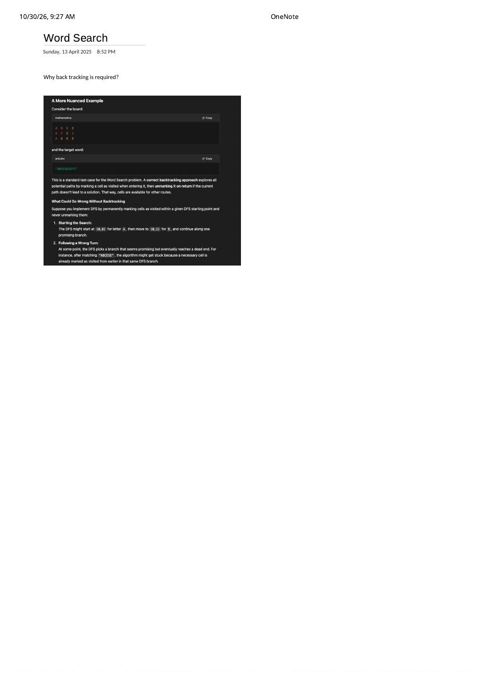

Word Search (LeetCode 79): Why Plain DFS Fails Without Backtracking
Expanded from handwritten competitive coding study note: 02_Word_Search.pdf
When engineers move from standard graph reachability (connected components, island counting) to Word Search, a deceptive question arises: “If I create a fresh visited array for each starting cell (r0, c0), why do I still have to unmark visited[r][c] when a DFS branch returns false?” 02_Word_Search.pdf captures the exact counterexample that breaks permanent visited marking and reveals the fundamental distinction between graph reachability and simple-path backtracking.
Problem Statement
LeetCode 79 · Word Search
Given an $R \times C$ grid of characters board and a string word, return true if word exists in the grid. The word can be constructed from letters of sequentially adjacent cells (horizontally or vertically neighboring), and the same letter cell may not be used more than once within the path.
The "ABCESEEEFS" Counterexample (02_Word_Search.pdf)
Consider the $3 \times 4$ board and 10-letter target word preserved in 02_Word_Search.pdf:
A B C E, row 1 = S F E S, row 2 = A D E E | Target: word = "ABCESEEEFS"
Suppose we start DFS at (0, 0) = 'A', step right to (0, 1) = 'B', and step right to (0, 2) = 'C'. Now we need index k = 3 ('E'), and C(0, 2) has two adjacent 'E's: (1, 2) below and (0, 3) to the right. Watch what happens if our neighbor loop tries down first and permanently leaves visited cells marked:
- Wrong turn down from
C(0, 2): We step toE(1, 2)(char 4) → right toS(1, 3)(char 5) → down toE(2, 3)(char 6) → left toE(2, 2)(char 7). Now we have matched"ABCESEE"and need one more'E'(char 8)—but the only adjacent'E'to(2, 2)is(1, 2), which was already consumed at step 4! - Why permanent
visitedfails: This branch dead-ends and unwinds back toC(0, 2)to try its second choice,E(0, 3). If cells(1, 2), (1, 3), (2, 3), (2, 2)were not unmarked on return,E(0, 3)cannot step down intoS(1, 3)because the failed branch poisoned it! - Why backtracking succeeds: Unmarking each cell as its recursive call returns frees
(1, 2), (1, 3), (2, 3), (2, 2), allowing the sibling branchA(0,0) → B(0,1) → C(0,2) → E(0,3) → S(1,3) → E(2,3) → E(2,2) → E(1,2) → F(1,1) → S(1,0)to match all 10 characters!
02_Word_Search.pdf. Notice that cell S(1, 3) is step 5 along both routes, yet in Route 1 cell E(1, 2) is already occupied whereas in Route 2 cell E(1, 2) is still free to serve as step 8!memo[r][c][k] = false!
In Route 1 above, we arrive at S(1, 3) with k = 4 (needing suffix "EEEFS") and fail because E(1, 2) is already in our prefix. In Route 2, we arrive at the exact same state (r = 1, c = 3, k = 4) and succeed because our prefix used E(0, 3) instead of E(1, 2)! Whether (r, c, k) succeeds depends on the entire set of visited cells along the active path, which is why Word Search requires genuine backtracking rather than polynomial DP.
Progression: Separate Visited Matrix → In-Place Sentinel → Frequency Pruning
- Basic Backtracking ($O(R \cdot C)$ extra space): Maintain
vector<vector<bool>> vis(R, vector<bool>(C, false)), settingvis[r][c] = trueon entry andvis[r][c] = falseon exit. - In-Place Board Mutation ($O(1)$ grid space): Save
char saved = board[r][c], overwriteboard[r][c] = '#'(any non-letter sentinel, soboard[nr][nc] == word[k + 1]fails automatically!), and restoreboard[r][c] = savedbefore returning. - Practical Contest Prunings (0 ms on LeetCode):
- Length & character-count check: If $|word| \gt R \cdot C$, or any character appears more times in
wordthan in the entireboard, returnfalsein $O(R \cdot C)$ before starting DFS! - Endpoint reversal: If
word.front()occurs much more frequently on the board thanword.back()(e.g.,word = "AAAAAAB"on a grid of'A's), reversewordfirst so DFS starts from the rare'B'instead of exploding from every'A'!
- Length & character-count check: If $|word| \gt R \cdot C$, or any character appears more times in
Clean C++ Implementation
#include <algorithm>
#include <array>
#include <string>
#include <vector>
using namespace std;
class Solution {
static constexpr int dr[4] = {1, -1, 0, 0};
static constexpr int dc[4] = {0, 0, 1, -1};
bool dfs(vector<vector<char>>& board, const string& word,
int r, int c, int k) {
if (board[r][c] != word[k]) return false;
if (k + 1 == (int)word.size()) return true; // matched entire word!
char saved = board[r][c];
board[r][c] = '#'; // 1. CHOOSE: mark visited along active simple path
for (int d = 0; d < 4; ++d) {
int nr = r + dr[d], nc = c + dc[d];
if (nr >= 0 && nr < (int)board.size() &&
nc >= 0 && nc < (int)board[0].size()) {
if (dfs(board, word, nr, nc, k + 1)) {
board[r][c] = saved; // restore caller's board even on early success
return true;
}
}
}
board[r][c] = saved; // 3. UNDO: free (r, c) for alternative sibling routes!
return false;
}
public:
bool exist(vector<vector<char>>& board, string word) {
int R = (int)board.size(), C = (int)board[0].size();
if ((int)word.size() > R * C) return false;
// Frequency sanity check + rare-endpoint orientation
array<int, 128> freq{};
for (const auto& row : board)
for (char ch : row) ++freq[(unsigned char)ch];
for (char ch : word)
if (--freq[(unsigned char)ch] < 0) return false;
// Recompute endpoint counts to search from the rarer end
int frontCnt = 0, backCnt = 0;
for (const auto& row : board) {
for (char ch : row) {
frontCnt += (ch == word.front());
backCnt += (ch == word.back());
}
}
if (frontCnt > backCnt) reverse(word.begin(), word.end());
for (int r = 0; r < R; ++r) {
for (int c = 0; c < C; ++c) {
if (dfs(board, word, r, c, 0)) return true;
}
}
return false;
}
};Time & Space Complexity Proof
- Why $3^{L - 1}$ Instead of $4^L$: Let $L = |\text{word}|$. We invoke
dfsfrom $R \cdot C$ starting cells. The first step from(r0, c0)explores up to 4 neighbors, and every subsequent step ($k = 1 \dots L - 2$) explores at most 3 unvisited neighbors because the cell we just stepped from is currently marked'#'! $$\text{Time Complexity} = O\bigl(R \cdot C \cdot 4 \cdot 3^{L - 2}\bigr) = O\bigl(R \cdot C \cdot 3^{L - 1}\bigr) \quad (\text{for } L \ge 2).$$ - Auxiliary Space Complexity: $O(L)$ for the recursion call stack (in-place sentinel marking uses $O(1)$ extra grid memory).
Key Edge Cases
- Single-character word on a $1 \times 1$ board (
board = [['a']], word = "a"): Notice our base checkif (k + 1 == word.size()) return true;runs immediately after verifyingboard[r][c] == word[k], before requiring any valid neighbor step! Checkingk == word.size()only after stepping out of bounds would falsely returnfalseon a $1 \times 1$ grid when all 4 neighbors are out of bounds. - Restoring the board on
return true: If the caller inspectsboardafterexist()returns, forgettingboard[r][c] = savedinside the early-exitif (dfs(...))branch leaves'#'characters scattered across the grid.
From the Handwritten Notes
View original handwritten page — 02_Word_Search.pdf (Page 1)


02_Word_Search.pdf, page 1: asking “Why back tracking is required?” and walking through the ABCE / SFES / ADEE counterexample on "ABCESEEEFS" where a wrong turn without unmarking traps cells needed by the winning path.